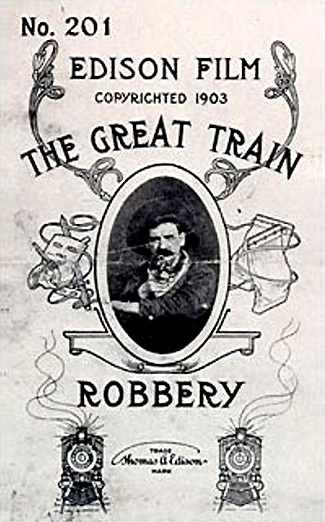
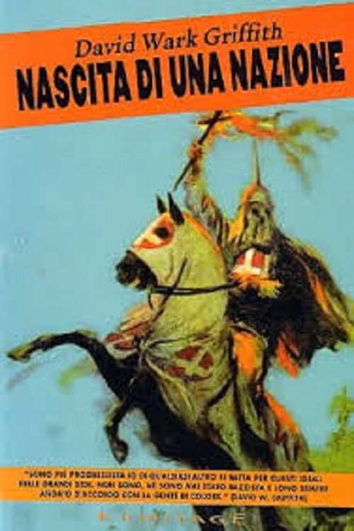
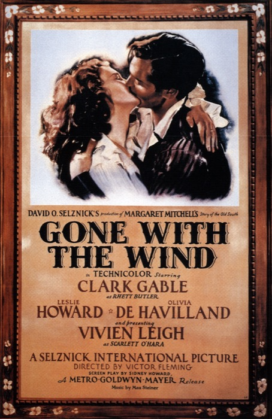
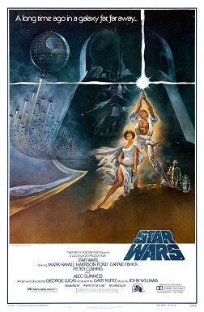
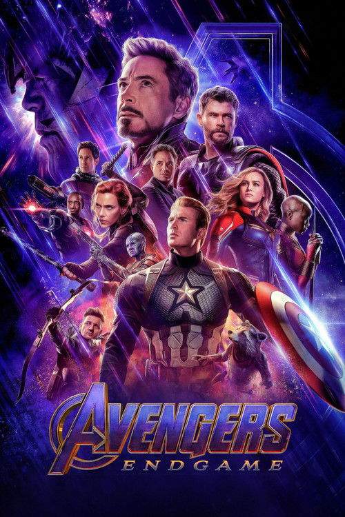
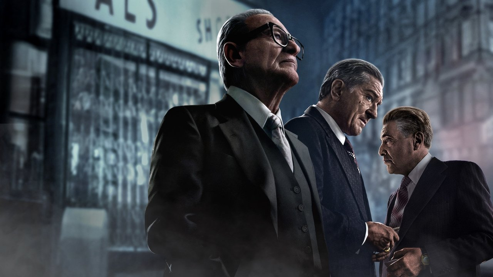
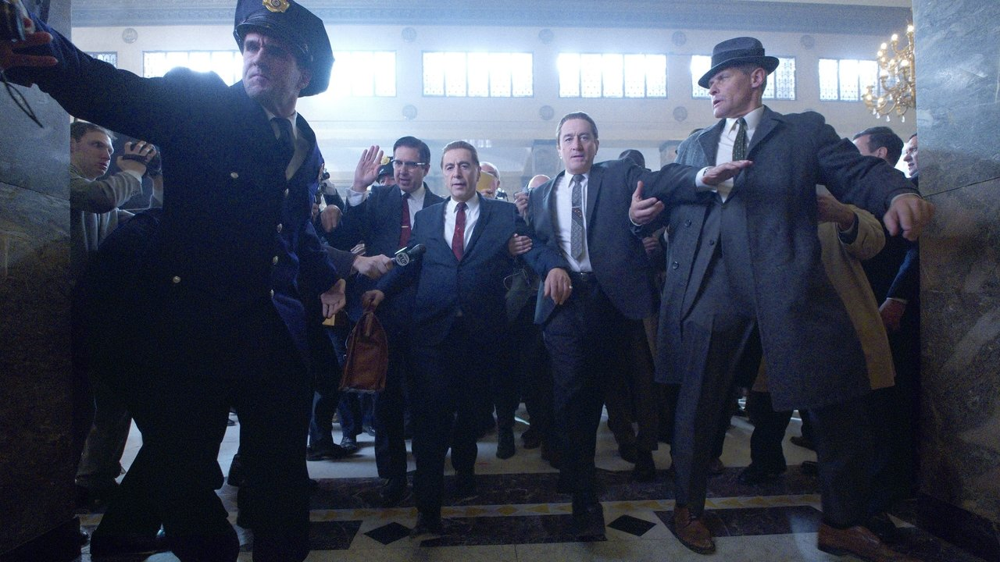
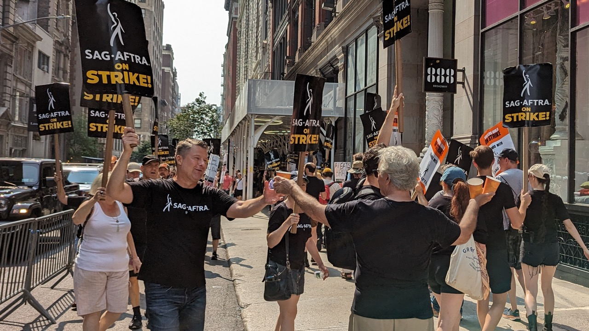

Полит·экономия
кино
Вы заплатили за этот фильм дважды
Один раз — деньгами: билет, диск, подписка. Второй раз — собой: временем, вниманием и данными, которые кто-то продал дальше. Десять лекций мы разбирали, как кино показывает мир. Последняя — о том, как устроен сам бизнес, который это кино производит.
Деньгами
Билет, прокат, подписка. Очевидная цена — но это лишь верхушка.
Вниманием
Часы перед экраном — это произведённый ресурс. Его продают рекламодателю.
Кому идёт прибыль?
Студии, конгломерату, платформе. И всё реже — тем, кто фильм сделал.
Где мы в курсе
Десять лекций камера была направлена на экран: форма, монтаж, аура, очуждение, интерпелляция, аппарат, гегемония, постмодерн, капитализм на экране. Теперь камера разворачивается на саму индустрию. Это капстоун: всё, что мы разбирали как идеологию, держится на экономике, которую мы наконец рассмотрим.
Что такое
политэкономия кино
Не эстетика и не история идей. Политэкономия коммуникаций (Гарнэм, Мёрдок и Голдинг, 1970-е) изучает кино как отрасль капитала: кто владеет средствами производства, как организован труд, по каким каналам идут деньги и кому достаётся прибыль.
Вопрос смещается с «что значит фильм?» на «кто его финансирует, кто на нём работает и кто им торгует?».
Кому принадлежат студии, прокат, платформы.
Сценаристы, актёры, монтажёры — и теперь зритель.
Касса, подписка, реклама, рента, данные.
Три вопроса лекции
Лекция движется от истории к настоящему. Каждый вопрос тянет за собой следующий — и приводит к развязке про ИИ.
Как индустрия зарабатывала в разные эпохи?
От никельодеона до платформы: студия-фабрика, блокбастер, стриминг.
Кто настоящий товар медиа?
Даллас Смайт: платформа продаёт не контент вам, а вас — рекламодателю.
Что ИИ делает с трудом и рентой?
Забастовки 2023, генеративный ИИ, технофеодализм.
Как кино делало деньги
Сто лет индустрия меняла способ заработка — но не саму логику: снизить риск капитала и поставить зрелище на поток.
Шесть эпох киноэкономики
Способ заработка менялся — аттракцион, фабрика, блокбастер, франшиза, подписка. Каждая эпоха придумывала, как надёжнее извлечь прибыль из зрелища.

НикельодеоныКино — ярмарочный аттракцион за пять центов. Производство кустарное, прибыль с входа.
Вертикальная интеграцияParamount, MGM, Fox: производство + прокат + кинотеатры в одних руках.
Студийная фабрикаКонтракты, конвейер жанров, фабрика звёзд. (Это и описывал Адорно.)★ пик системы
Блокбастер«Челюсти» и «Звёздные войны»: широкий релиз + маркетинг + франшиза. Продают событие.
Конгломераты и IPШесть студий → пять корпораций. Кино = франшиза интеллектуальной собственности. Платформенный капитализмОт продажи копий к подписке-ренте. Метрика — не касса, а данные и удержание.→ финал лекции
Платформенный капитализмОт продажи копий к подписке-ренте. Метрика — не касса, а данные и удержание.→ финал лекцииГолливуд как фабрика
К 1930-м студии устроены как заводы Форда. Вертикальная интеграция: одна корпорация производит фильмы, владеет прокатом и сетью кинотеатров — и гонит зрителя по собственному конвейеру.
Сценаристы, актёры и режиссёры — на семилетних контрактах, как наёмные рабочие. Жанры — это производственные линии. Звезда — бренд, амортизируемый актив.
Конвейер сценарных отделов и съёмочных павильонов.
Block booking: кинотеатр обязан брать пакет фильмов оптом.
Студия владеет залами — рынок замкнут на себя.
Как государство разломало фабрику
В 1948-м Верховный суд США по делу United States v. Paramount Pictures признал вертикальную интеграцию монополией и заставил студии продать кинотеатры. Замкнутая фабрика распалась.
Пять мейджоров контролируют производство, прокат и показ. Конкуренция задушена, прибыль гарантирована системой.
Студии теряют залы, растёт телевидение, рушится контрактная система. Кризис 1950-х — и поиск новой модели заработка.
Блокбастер продаёт не фильм, а событие
«Челюсти» (1975) и «Звёздные войны» (1977) изобретают новую экономику: одновременный широкий релиз, телереклама на десятки миллионов и франшиза с мерчем. Риск концентрируется в нескольких тэйтполах, которые должны окупить всё.
Wide release
Сразу тысячи экранов вместо медленного «расползания» из премьерных залов.
Событие
ТВ-кампания превращает выход фильма в национальное событие.
Мерч и сиквелы
«Звёздные войны» зарабатывают на игрушках больше, чем на билетах.
Пять корпораций
владеют почти всем
К 2019-му Disney поглощает 21st Century Fox за ≈$71 млрд. Полдюжины конгломератов — Disney, Warner, Universal, Paramount, Sony — контролируют студии, библиотеки и франшизы. Кино превращается в управление интеллектуальной собственностью.
Marvel, «Звёздные войны», Pixar — под одной крышей. Не художественные миры, а портфели активов, которые доят десятилетиями.
Ценность — не фильм, а право на вселенную и её серийную эксплуатацию.
Рост не съёмками, а скупкой конкурентов и их библиотек.
Концентрация, против которой 1948-й боролся, вернулась в новой форме.
Стриминг:
от копии к ренте
Платформа перестаёт продавать вам фильм. Она сдаёт доступ в аренду — и считает не кассу, а ваше время.
Вы больше ничего не покупаете
Раньше зритель покупал копию: билет, кассету, диск. Стриминг отменяет покупку — вы платите ренту за доступ, который в любой момент могут отозвать. Это сдвиг от товара к ренте.
Собственность
Купил диск — он твой навсегда. Разовая сделка, конечная цена.
Подписка-рента
Платишь, пока платишь. Перестал — теряешь всё. Доход — поток, не сделка.
Данные, не касса
Платформа измеряет не сборы, а удержание: сколько вы смотрели и не ушли ли.

Ирландец
Ирландец
Мечта Скорсезе: три с половиной часа, Де Ниро, Пачино, Пеши, дорогая технология омоложения. Классические студии отказались — слишком дорого и непрокатно.
Фильм оплатил и выпустил Netflix: ≈$159–200 млн бюджета, символический прокат на пару недель — и сразу в подписку.
Netflix платит
не за кассу
Платформа не ждёт прибыли с билетов — их почти нет. «Ирландец» покупает другое: подписчиков, престиж и время. Имя Скорсезе и три звезды — приманка, удерживающая аудиторию в подписке.
Окна проката схлопываются: кинотеатр становится не источником дохода, а маркетинговым жестом ради «Оскаров».
Не сборы, а привлечение и удержание подписчиков.
Автор и награды как актив бренда платформы.
Кто досмотрел трёхчасовой фильм — ценная информация.
Кино без зала
Трёхчасовую фреску о времени и вине большинство смотрело дома: с паузами, в несколько заходов, с телефоном в руке. Платформа не диктует ритм — его задаёт зритель и интерфейс.
Спор Скорсезе с Marvel («это не кино, а парк аттракционов») горько ироничен: его собственный фильм существует как иконка в ленте рекомендаций.

Что стриминг делает с формой
Бизнес-модель просачивается в эстетику. Платформенное кино снимают с поправкой на домашний экран, паузу и алгоритмическую витрину.
Свобода длины
Нет сеансов и оборота зала — можно и 209 минут. Длина больше не ограничена экономикой кинотеатра.
Борьба с паузой
Громкие сцены в первые минуты, чтобы вы не переключились. Монтаж под «второй экран».
Алгоритм и обложка
Превью и постер подбираются под ваш профиль. Фильм — иконка в потоке контента.
Автор, оплаченный
капиталом данных
«Ирландец» — не провал и не триумф «независимости». Это символ новой расстановки: большое авторское кино теперь возможно, но как убыточный актив платформы, который окупается не кассой, а вашим вниманием и подпиской.
Скорсезе получил свободу — и одновременно стал инструментом удержания аудитории. Это и есть политэкономия стриминга в одном фильме.
Сила: платформа финансирует то, от чего отказался Голливуд.
Предел: автор существует ради метрик удержания, а не ради зрителя в зале.
Данные вместо кассы
Netflix десятилетиями не публиковал сборы, потому что сборов нет. Валюта платформы — поведение: что вы досмотрели, на чём бросили, в какой момент поставили паузу. Рекомендательный движок — не сервис для вас, а инструмент извлечения данных из вас.
Кассовые сборы за уикенд — публичный, понятный, разовый показатель успеха.
Часы просмотра, удержание, отток. Закрытые данные, которые принадлежат только ей.
Кто здесь товар?
Самый неочевидный ход марксистской теории медиа: товар — не фильм. Товар — это вы.
Аудитория-товар
Канадский политэконом Даллас Смайт в статье «Communications: Blindspot of Western Marxism» (1977) задаёт вопрос, который проглядел весь западный марксизм: что на самом деле продаёт коммерческое медиа?
Ответ переворачивает оптику. Медиа продают не передачи зрителям. Они продают зрителей рекламодателям. Контент — лишь приманка, чтобы собрать и удержать аудиторию, которую затем оптом сбывают.
Фильм, сериал, лента — то, что собирает вас перед экраном.
Собранное и измеренное внимание аудитории.
Рекламодатель, платящий за доступ к вашему вниманию.
Если вы не платите за продукт —
продукт это вы
Контент бесплатно или дёшево
Платформа отдаёт зрелище почти даром — чтобы собрать вас.
Вы производите внимание и данные
Каждый просмотр, пауза, клик — произведённый ресурс.
Вас продают рекламодателю
Товар — это собранная и размеченная аудитория. То есть вы.
Смотреть — значит
работать
Смайт назвал это «работой смотрения». Джонатан Беллер в «The Cinematic Mode of Production» (2006) доводит мысль до предела: внимание стало формой труда, а кино — фабрикой, которая этот труд организует.
«Смотреть — значит трудиться»: глядя на экран, вы производите стоимость — внимание и данные, — которую присваивает платформа. Зритель встал к конвейеру, не заметив этого.
Беллер: внимание — это труд, создающий стоимость.
«Free Labor» (2000): бесплатный цифровой труд аудитории и пользователей.
Труд создаёт стоимость — даже когда его не называют трудом и не оплачивают.
Экономика внимания
Когда товар — внимание, цель индустрии меняется: не рассказать историю, а удержать вас как можно дольше. Алгоритм оптимизирует не качество, а вовлечённость. Кино дробится на клипы, бесконечная лента вытесняет сеанс.
Сеанс с началом и концом
Вы пришли, посмотрели, ушли. Внимание ограничено во времени.
Поток без дна
TikTok, Shorts, Reels: автоплей спроектирован, чтобы вы не останавливались.
Максимум вовлечения
Метрика успеха — не «понравилось ли», а «сколько ещё не ушёл».
Теперь вы платите собой
ИИ, труд и рента
2023 год: впервые искусственный интеллект стал предметом классового конфликта в Голливуде. Это не про технологию — это про то, кому она принадлежит.
2023: первый удар по ИИ
Впервые с 1960 года Гильдия сценаристов (WGA) и актёров (SAG-AFTRA) бастуют одновременно. Среди главных требований — не только доля от стриминга, но и защита от ИИ. Голливуд встал на полгода.
148 дней
Требование: ИИ не пишет сценарии и не лишает авторов оплаты и кредита.
118 дней
Требование: согласие и оплата за цифровой двойник. Студии хотели сканировать статистов навсегда за один день.
Гарантии
Контракты впервые ограничили ИИ: согласие, оплата, прозрачность. Коллективный труд сработал.

«ON STRIKE»
Генеративный ИИ
как средство производства
ИИ для кино — это не магия, а станок. И вопрос марксистский: кому он принадлежит? Не сценаристу и не актёру, а студии и владельцам модели. Машина не отменяет труд — она перераспределяет власть над ним.
Маркс называл машины «мёртвым трудом». Генеративный ИИ обучен на труде миллионов сценаристов, художников и актёров прошлого — присвоенном бесплатно. Это мёртвый труд, оживший, чтобы удешевить живой.
Модель построена на чужих фильмах, текстах, лицах — без оплаты.
Труд дешевеет: «доведи за ИИ» вместо «напиши».
Выгода от автоматизации идёт владельцу модели, не работнику.
Платформа — не рынок, а феод
Экономист Янис Варуфакис («Технофеодализм», 2023) утверждает: капитализм мутировал. Прибыль с рынка сменяется рентой с платформы. Владелец «облачного капитала» — Netflix, Amazon, YouTube — не продаёт на рынке, а собирает оброк с тех, кто живёт на его земле.
Прибыль с рынка
Конкуренция, продажа товара, прибавочная стоимость в производстве.
Рента с платформы
Нет рынка — есть феод. Платишь за доступ к территории владельца.
Облачные крепостные
Зрители и создатели бесплатно возделывают землю лорда — производят контент и данные.
Можно ли этому сопротивляться?
Политэкономия не обязана заканчиваться отчаянием. Точки сопротивления реальны — но и пределы честны.
Коллективный труд: забастовки 2023-го вырвали гарантии у студий. Общественное финансирование и кооперативы выводят кино из-под чистой прибыли. Регулирование данных и монополий. Гигиена внимания как индивидуальная защита.
Индивидуальный бойкот бессилен против инфраструктуры. «Цифровой детокс» — паллиатив. Реальный рычаг — там же, где у Маркса: организованный труд и собственность на средства производства, а не потребительский выбор.
Одиннадцать лекций
сходятся в одну
Форма, аура, идеология, гегемония — всё это надстройка. Под ней — то, что мы наконец назвали по имени: политэкономия.
База под всей надстройкой
Каждая лекция вскрывала свой слой надстройки. Эта лекция показала фундамент, на котором все они стоят: производство, собственность, труд, прибыль. Базис не отменяет надстройку — он объясняет, откуда она растёт.
Как кино значит: монтаж и форма, аура и воспроизводимость, очуждение, интерпелляция, аппарат, гегемония, постмодерн, образы капитализма.
Как кино производится: студия-фабрика, блокбастер, конгломерат, платформа, аудитория-товар, внимание-труд, рента и ИИ.
Если бы Маркс посмотрел Netflix?
Он узнал бы свою книгу. Бесконечная лента — товарный фетишизм в чистом виде: за «контентом» спрятаны труд и отношения власти. Подписка — рента. Алгоритм — машина, мёртвый труд, оживший за счёт живого. А зритель, считающий себя клиентом, — одновременно товар и неоплаченный рабочий.
Товар и работник
Вас продают рекламодателю — и вы же бесплатно трудитесь вниманием.
Феод и рента
Не рынок, а территория, с которой собирают оброк временем и данными.
Мёртвый труд
Машина из присвоенного труда миллионов — чтобы удешевить труд живых.
К просмотру
Не кейсы «про капитализм», а оптика на саму индустрию — смотрите, замечая бизнес за зрелищем.
дилеммадок. · NetflixЭкономика внимания изнутри: инженеры платформ о том, как продаётся пользователь.
К чтению
Одиннадцать лекций
От товара и идеологии — к политэкономии платформ. Спасибо, что прошли этот путь. Теперь у вас есть метод — а кино меняться не перестанет.